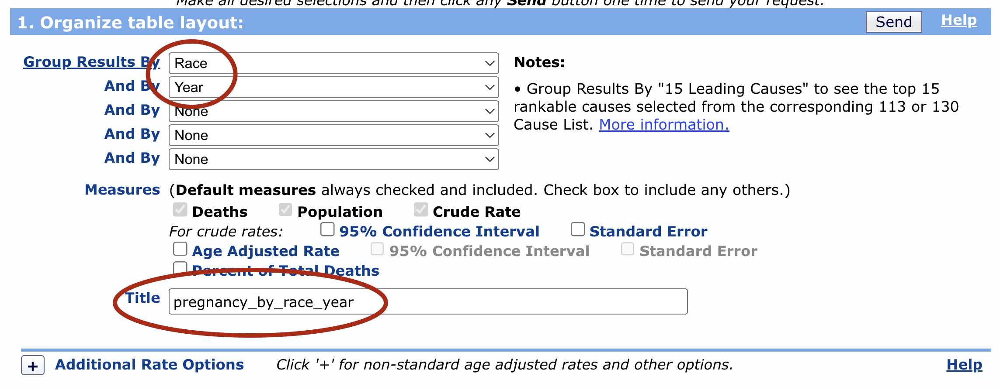
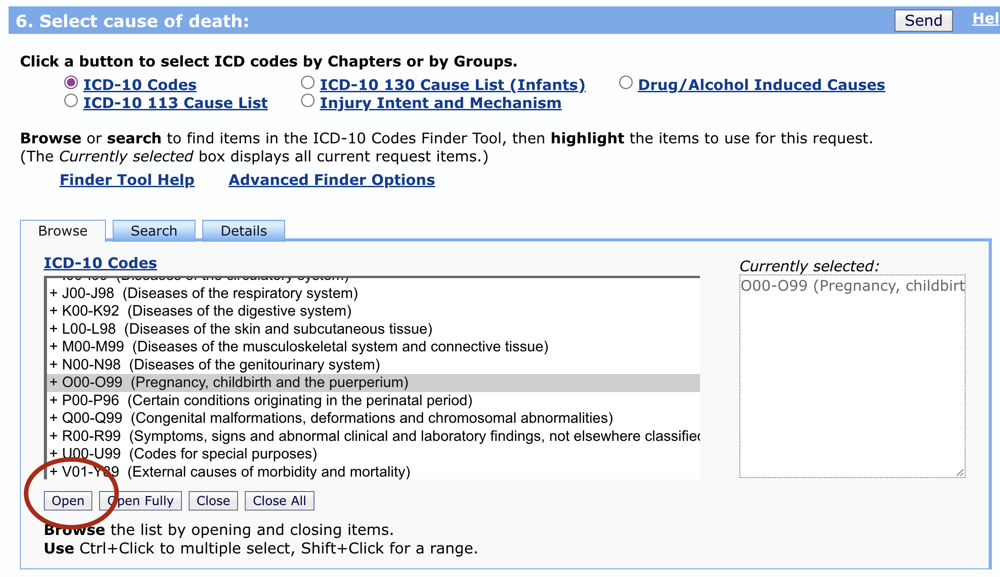
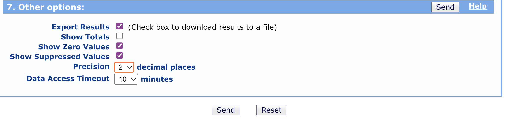

Blog Post 1
Assignment Overview
Using data downloaded from the CDC’s WONDER API, produce a compelling data visualization in Tableau. Referencing case study materials and the data documentation, write an 800-word blog post that presents a claim of fact by leveraging your data visualization as evidence. Help the audience responsibly interpret the visualization by describing “what counts” in the data, providing some context on the social contexts of the data’s production, and detailing what people and issues have been erased from the data and why. When finished, submit your blog post and visualization on Moodle.
I need to be able to see your data visualization when I review your blog post. It is easier for me to review all submissions when the blog post is directly embedded in the document. Be sure to export the visualization as a .PNG file from Tableau and include it in the document that you submit on Moodle.
Suggested Blog Post Structure
Introduction and Main Argument (100)
- Blog posts often open with a catchy quote, story, or statement
- They also provide guidance on where your writing is taking a reader
- Your thesis statement should be clear from your introduction. Be sure that you are making a claim of fact.
Background on the issue your blog is addressing (100)
- Why should we care about what’s in your data visualization?
- What is at stake here? Be sure to consider your rhetorical positioning.
- Be sure to cite sources.
Background on the Dataset and your Subset (150)
- Who produced this data?
- How was it collected? When and where?
- What counts in this data? How is it categorized?
- What subset of the data are you working with, and how did you prepare it for analysis/visualization?
Explanation (200)
- What steps did you take to produce this visualization? Make sure these steps are described for a general audience that may not have experience working in Tableau. Avoid using Tableau-specific language.
- What does your plot show?
- What are some quantitative facts that we can summarize from the plot?
Explication (150)
- How should we interpret this plot?
- What are some issues that go unaddressed in the plot?
- How might the insights we derive from the plot be improved if different variables or modes of categorization were available?
Conclusion and call to action (100)
- Restate what you learned
- Offer a normative suggestion for what should happen based on your analysis
Accessing CDC WONDER Data
Navigate to https://wonder.cdc.gov/ucd-icd10.html, read the Data Restrictions, and click I Agree.
In section 1 of the WONDER form, determine how you want to aggregate (group) your results. This is what we are looking to show differences in death rates by. Do you want to show differences in death rates by race, over time, by geography, by gender, by ethnicity? Three important notes:
- You may select any grouping variables except for anything in the Cause of Death section. This is because we are going to filter to one cause of death.
- You should select 2-3 grouping variables.
- If you group by age-groups, be sure to select the checkbox for age-adjusted crude rate. Refer to the data documentation to learn why this is so important!
Be sure to also title your dataset in Section 1.

In sections 2-5, you have the option to filter your results. Perhaps you just want to look at death rates in one state, in one year, for one demographic, etc. You would set those options here. Important notes:
- You don’t have to apply any filters, but you may. If you don’t, your data will represent the death rates in the entire US from 1999 to 2021.
- If you group by a variable, I don’t recommend you also filter by that variable. For example, if I choose to compare death rates across states, I will group my results by state. But if then I filter my data to MA, I’m not going to be able to compare across states because my data will only have one state.
- The more specific your data is (i.e. the more you filter) the more likely you will have suppressed values. It’s ok to have some suppressed values in your analysis, but we don’t want all suppressed data!
In section 6, you should filter to one cause of death, and it can either be a specific cause, or a more general cause. For instance, I could select the entire set of codes for O00-O99 (Pregnancy, childbirth and the puerperium) to visualize pregnancy-related deaths. Alternatively, I could click on that category, and the click the button “Open” at the bottom of the screen to select a more specific cause in that category, such as O00-O07 (Pregnancy with abortive outcome).
- If you are not sure where to find a certain cause, you can search for it via the Search button. If that doesn’t work feel free to ask in
#fys-189-questions!
- If you are not sure where to find a certain cause, you can search for it via the Search button. If that doesn’t work feel free to ask in

- In section 7:
- Check the box for Export results
- Uncheck the box for Show totals
- Check the boxes for Show 0 and Suppressed Values
- Set the Precision to 2 decimal places

- Click Send
- Load the data into your visualization software, and remove the Notes column.
- Happy visualizing!